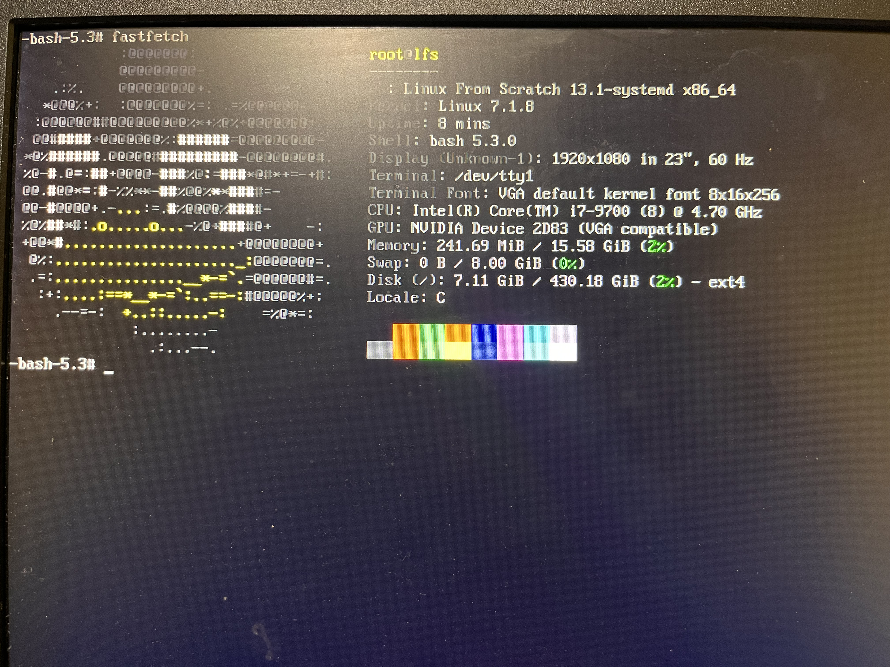
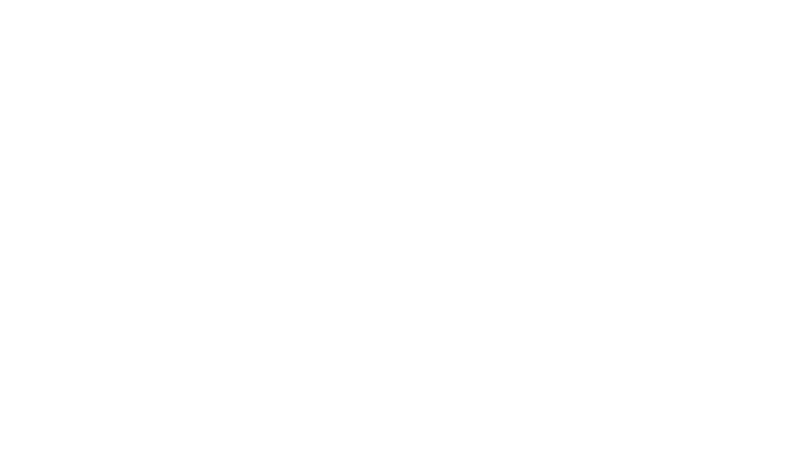
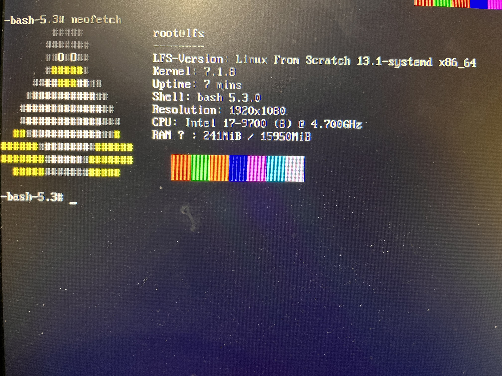

Je suis Charles et j'habite en Sarthe. Je code depuis mes 9 ans avec l'aide de mon frère, mais j'ai vraiment commencé à savoir coder des choses de moi-même à 12 ans. Aujourd'hui j'ai 14 ans, mon langage de programmation préféré est Rust et je passe mon temps à expérimenter avec Linux et à chercher à en savoir plus sur comment il fonctionne (je l'utilise depuis 1 an). Je code en Rust, Python, Lua et c#
Je ne partage pas énormément ce que je code, mais pour le peu qui est en ligne, je l'ai listé ci-dessous.
_ JavaScript
_ React
_ Le framework Electron
_ Flutter
_ Rust
_ Python
_ Qt
_ Les bonnes docs
J'aime beaucoup l'esthétique des produits Nothing et de leur OS, simple
et sans distraction ni perte de temps
.
Nothing ne fait pas d'ordinateur et beaucoup
d'utilisateurs semblent le demander. J'ai vu
des concept arts en ligne et je me suis dit que ça serait pas mal à refaire sous Linux.
J'ai choisi Arch pour pouvoir utiliser Hyprland
(un window manager / bureau graphique) et Quickshell
pour pouvoir coder mes propres widgets de zéro.
Peut-être qu'un jour j'en ferai une ISO
qui serait installable comme un « Nothing Desktop »
(on n'est pas sur une vraie nouvelle distribution, mais plutôt des dotfiles
intégrés à un installateur graphique, type Omarchy).
Dotfiles


J'ai dit que j'aimais Linux et comprendre son fonctionnement. Alors j'ai fait un linux from scratch 85 paquets compiles a la main sans distribution jusqu'a avoir un gnu/linux fonctionnel.



Un shoot 'em up complet avec mouvements d'étoiles, ennemis, difficultés, etc.
Note : il faut installer le script Kandinsky dans le repository
Je l'ai aussi fait à 12 ans. Available here
Un petit moteur de jeu fait pour être forké et adapté à n'importe quel jeu.
Je l'avais fait pour gagner du temps en développant des jeux sur NumWorks,
même si je n'ai jamais mis en ligne les jeux en question.
Found here
Un petit prototype fait en Lua sur PICO-8. Je ne l'ai jamais fini, cependant j'ai gardé un binaire ici